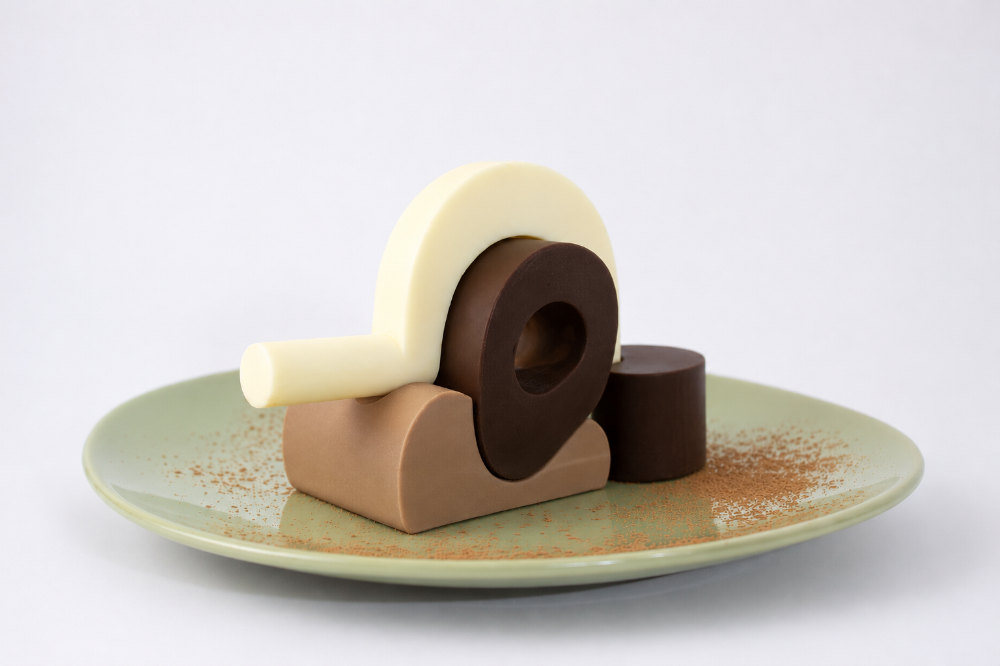
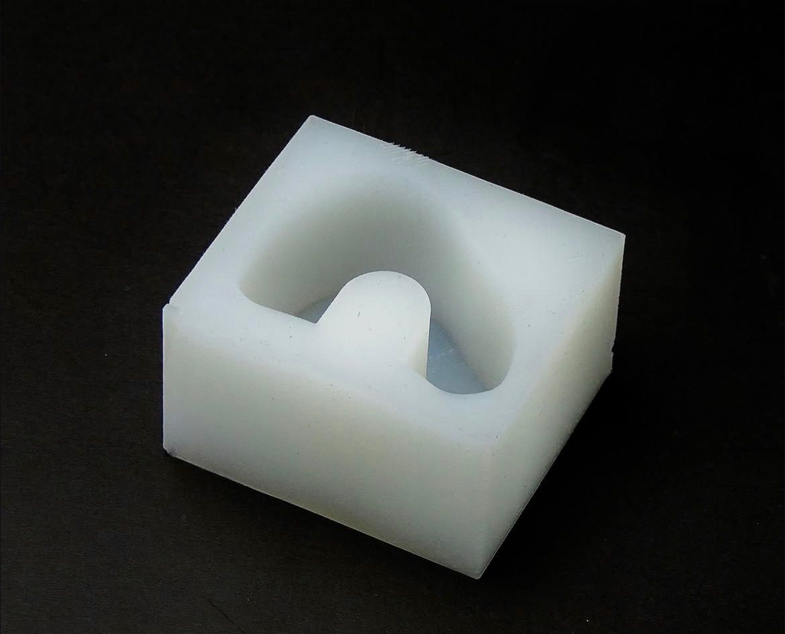
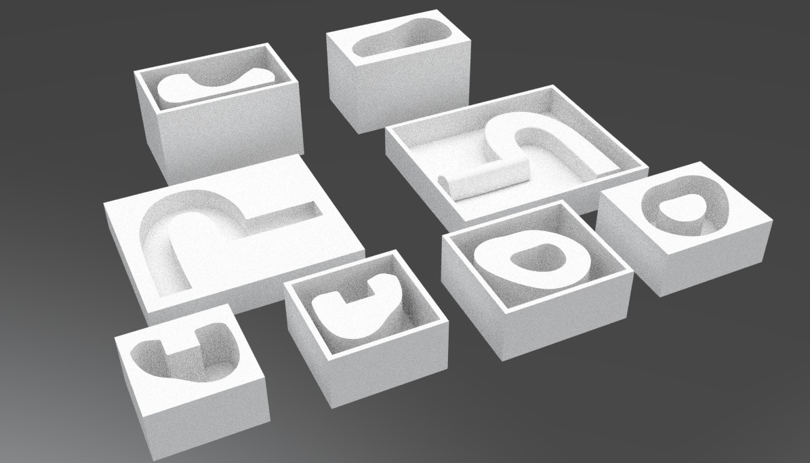

07 / 08
Aural
Aural es un postre-instalación de chocolate realizado en conjunto con Vanessa García y Narely Riquelme, inspirado en los cuatro lóbulos del cerebro humano: frontal, parietal, temporal y occipital. A través de formas diseñadas para encajar entre sí, el proyecto traduce distintas funciones cognitivas y sensoriales en piezas de chocolate, explorando la relación entre percepción, memoria, textura y sabor.
El desarrollo del proyecto contempló el diseño y fabricación de moldes personalizados para cada pieza. Estos fueron modelados tridimensionalmente en Rhinoceros (Rhino), posteriormente impresos en 3D y utilizados como matrices para la elaboración de moldes de silicona apta para uso alimentario. Este proceso permitió reproducir con precisión las geometrías diseñadas, asegurando sus proporciones, detalles y encajes, además de posibilitar la fabricación de las distintas piezas de chocolate.
La propuesta integra diseño tridimensional, experimentación material y gastronomía, transformando el acto de comer en una experiencia multisensorial y colectiva. Mediante la combinación de moldes, formas, texturas y sabores, Aural explora nuevas posibilidades de fabricación aplicada al diseño de postres, donde tanto el desarrollo técnico como la experiencia de consumo forman parte de un mismo proyecto
  